| 日付 | 2013年9月5日（木） - 2013年9月7日（土） | ||
|---|---|---|---|
| 山域 | 那須 | ||
| メンバー | 家族（妻、長女・2歳、長男・0歳） | ||
| 山行形態 | 子連れ2泊3日コテージ泊 | ||
| アクセス | 車 | ||
| ルート (Map) |
|
2日目
本日は那須岳に登る予定。下界からは僅かながら青空が見えた。
決して良い天気とは言えないが、昨日に比べるとはるかに良い天気だ。
車でロープウェイ山麓駅まで移動する。
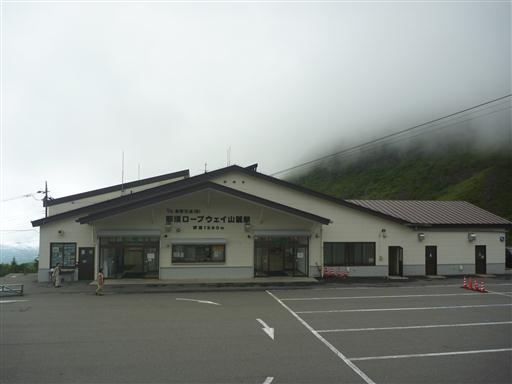
雲の切れ間から僅かに下界の景色が見える。
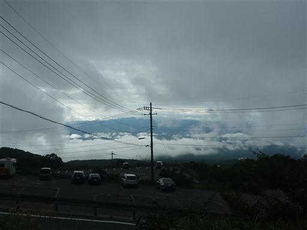
しかし那須岳方面は厚い雲に覆われている。
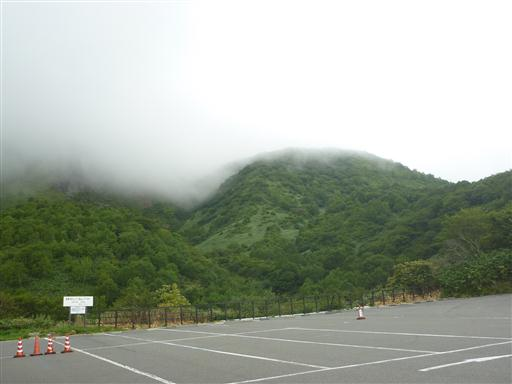
ここのロープウェイは定員100人超のかなり大きなものだ。
本日は悪天の平日のため客の数は少ない。
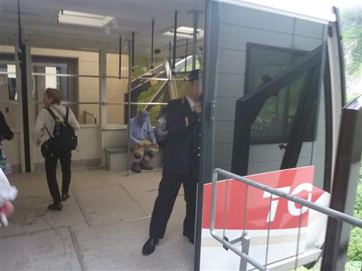
ロープウェイは雲の中に向かっていく。
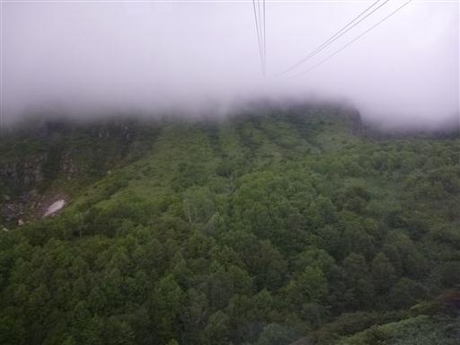
ロープウェイ山頂駅に到着。標高1684m。
なんと小雨がぱらついている…
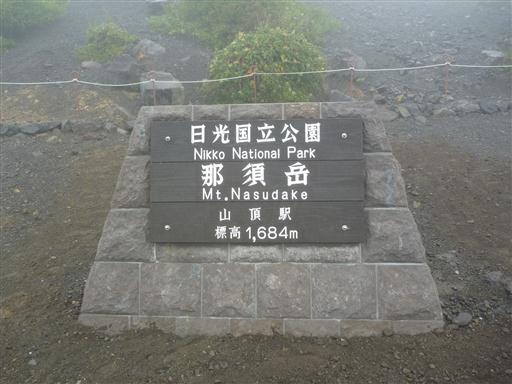
他の登山者はカッパを身に着けている。このまま何もせず帰ろうかとも思ったが、
雨が止んできたため思い切って山頂を目指すことにする。幸い風はほとんど吹いていない。
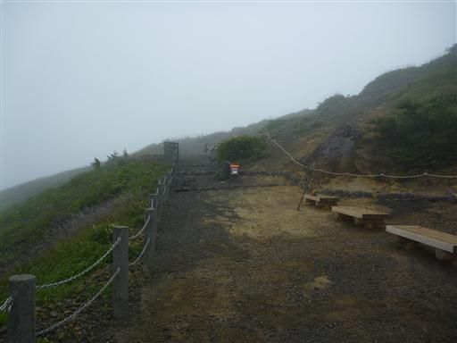
ここの登山道は草木のほとんどない岩石地帯が続く。
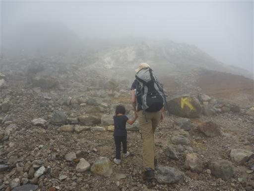
少し視界が開けて山頂部が見えてきた。
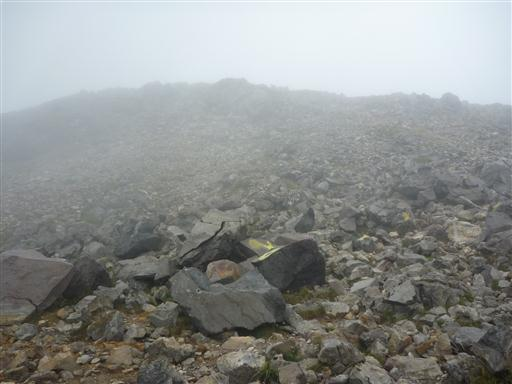
歩きにくい登山道が続く。娘を励まし、褒めながら歩いていく。
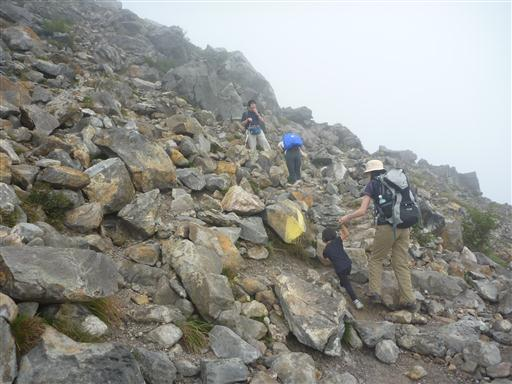
一瞬、頭上に青空が現れる。やはり青空が出るといい気持ちだ。
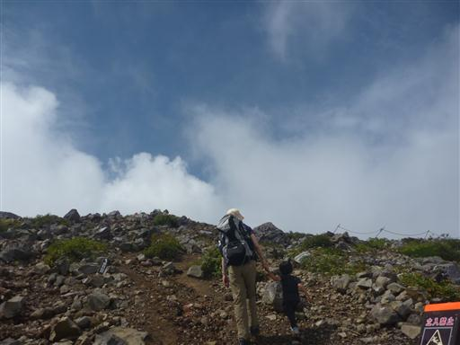
視界が広がって那須岳の噴火口が見えてきた。
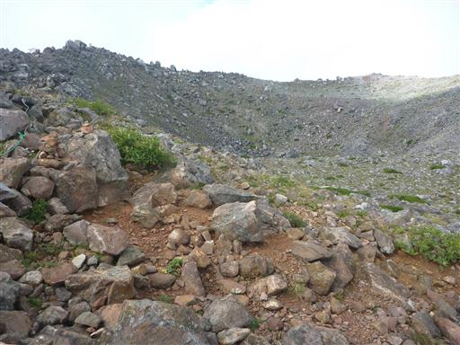
山頂手前の鳥居を潜る。
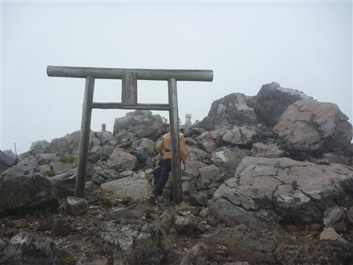
那須岳山頂に到着。標高1915m。
実に6年ぶりの那須岳山頂だ。娘はここまで頑張って歩き通した。
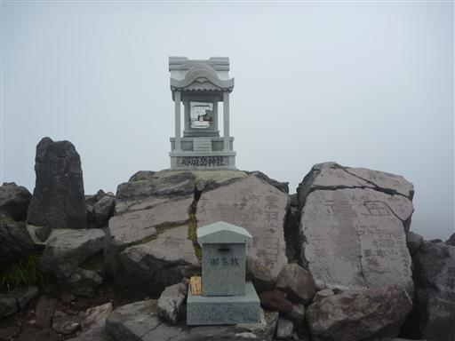
昼食をとったら下山を開始する。娘は一歩も歩こうとせず、仕方なく肩車で下山。
頭の上が重いとバランスが悪く、案外歩きにくい。滑りやすい登山道で下山は結構苦戦した。
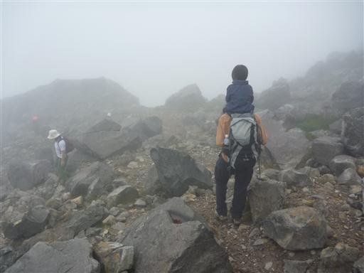
山頂駅に到着。幸い雨に降られることもなく下山することができた。
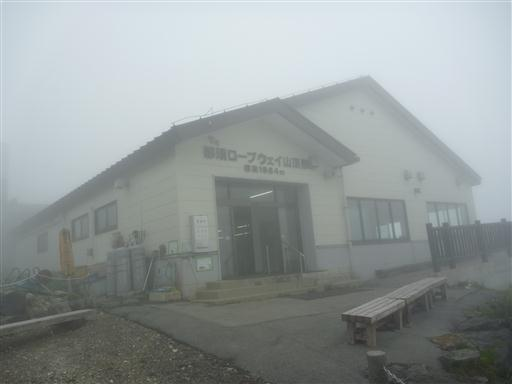
ロープウェイで下る。視界は全くない。
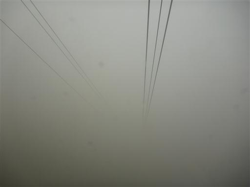
下山後、那須高原展望台に寄り道してみる。
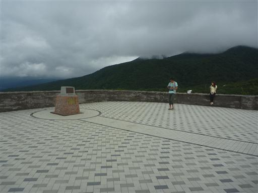
那須岳方面は厚い雲に覆われていたが、下界の景色は望むことができた。
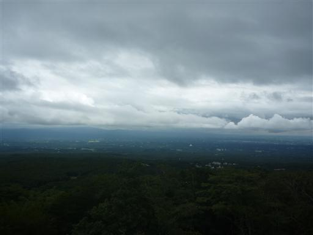
続いて那須岳中腹にある殺生石に立ち寄る。
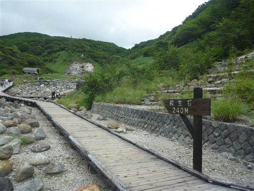
この辺り一帯は有毒ガスが噴出しているため、草木が生えていない。
観光地化されているが、規模は箱根の大涌谷よりもだいぶ小さい。
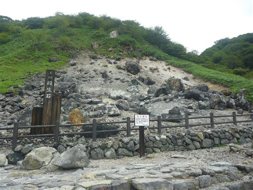
遊歩道の近くには地蔵がたくさん並んでいる。
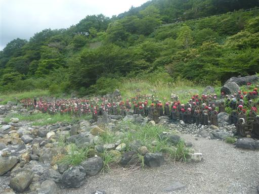
キャンプ場に戻ってくる。娘はドングリを拾って遊んでいる。
昨日の大雨と強風の影響か、枝付きの緑色のドングリがたくさん落ちている。
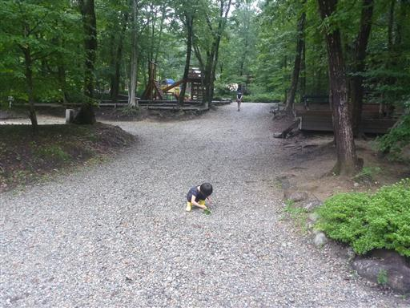
キャンプ場内を少し散策してみる。こちらはメープル池。
子供が水遊びできる池らしいが、寒いので入ることができない。
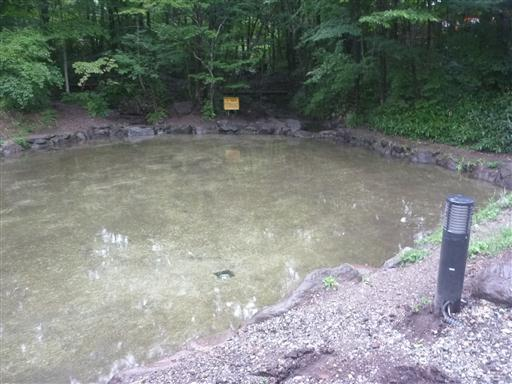
こちらは釣り堀。中を覗くとニジマスがたくさん泳いでいる。
明後日にはニジマスの掴み取り大会があるらしいのだが、
この寒さで水の中に入ることができるのだろうか？
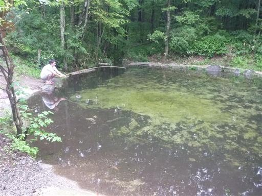
デッキで夕食をとる。相変わらず霧が立ち込めていて天気が悪い。
明日も好天予報ではないため、同じような景色となりそうだ。